Пресс-кит
Факты, кадры, ролики и знаки студии и её игр. Используйте в статьях, обзорах и видео без запроса. Нужно другое — напишите: support@didogames.net.
Dido Games
Независимая студия одного человека. Игры делает искусственный интеллект: код, арт, звук, баланс и тексты; автор ставит задачи, принимает работу и выпускает игры. Автор — продюсер игровых проектов, в разработке игр больше десяти лет.
Знак студии


Знак стоит на тёмном грунте #0B0D12, буквы — #F0EAE1, точка — #8FD8E8. Не перекрашивайте и не вытягивайте.
Поезд Последней Войны
Вышла · Google Play и App Store · бесплатноКоротко: стреляет машина, решает человек — так устроен поезд в игре, и так сделана сама игра. Тридцать лет после войны горстка уцелевших ведёт бронепоезд к источнику зимы, а машины той войны пикируют с неба. Турели стреляют сами — руки игрока заняты сбором чипов, способностями реактора и выбором карт: каждый ранг предлагает три, взять можно одну.
«Поезд Последней Войны» — аркадное ПВО-выживание. Состав идёт по линии, камера держит его на месте, мир прокручивается мимо, враги пикируют сверху. Прицеливаться не нужно: зенитки ведут огонь автоматически. Игрок управляет полем сбора — падающие чипы надо поймать до земли, они заряжают реактор.
Прокачка внутри боя — карточная. Забег равен одной миссии из десяти волн; за сбитые машины растёт ранг, каждый ранг замирает бой и выкладывает три карты — выбор обязателен. Карты — это лестницы орудий: девять стволов, у каждого пять ступеней (монтаж, лицо, путь, рост пути, предел). Монтаж ставит ствол на состав, а третья ступень — развилка: ствол выбирает одно из трёх направлений своей стихии, два других закрываются до конца миссии. Плюс четыре связки, которые загораются сами, когда на составе встречаются два напарника.
Дерево узлов живёт вне боя: собранные в рейсе чипы тратятся на него между забегами. Маршрут — десять биомов со своими врагами и погодой; каждую миссию закрывает мини-босс, каждый биом — босс с фазами. В депо собирается состав: локомотив, вагоны со способностями реактора, модули и трофейные ядра. Орудия в депо не ставятся — они приходят картами в бою. Забеги бесплатные, без энергии и таймеров.
Ключевые особенности
- Зенитки на ходу: турели стреляют сами — игрок отвечает за сбор, способности и выбор карт
- Поле сбора: чипы нужно поймать до земли, они заряжают реактор
- Карточный драфт в бою: ранг за сбитых, на каждом ранге бой замирает и выкладывает три карты
- Лестницы орудий: 9 стволов, у каждого 5 ступеней — монтаж, лицо, путь, рост пути, предел
- 27 путей: на третьей ступени ствол выбирает одно из трёх направлений своей стихии
- 9 пассивок по 3 ступени
- 4 связки: напарник напечатан на карте заранее, связка загорается сама и растёт от уровней обоих стволов
- Пересдача карт: одна бесплатная за забег, дальше — за просмотр ролика, лимит виден на кнопке
- 10 биомов × 10 миссий = 100 миссий; старт с любого открытого биома
- Дерево узлов — вне боя: чипы рейса тратятся между забегами
- Депо: 4 локомотива, вагоны со способностями реактора, модули 6 ролей × 4 редкости, трофейные ядра
- Забеги бесплатные: без энергии и таймеров ожидания
- Портрет, управление одним пальцем; кампания играется офлайн
Арт, ролик, иконка, кадры
MP4 · 540 × 960

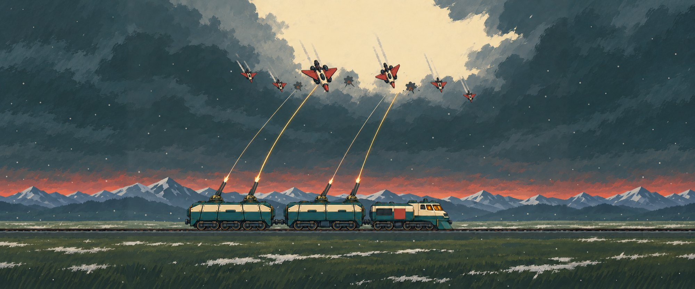
PNG · 2458 × 1024
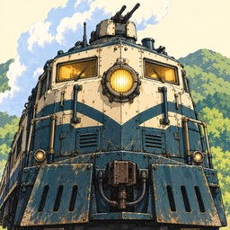
PNG · 1024 × 1024

Кадры 1080 × 1920, сняты в игре на английском интерфейсе. Клик — полный размер.

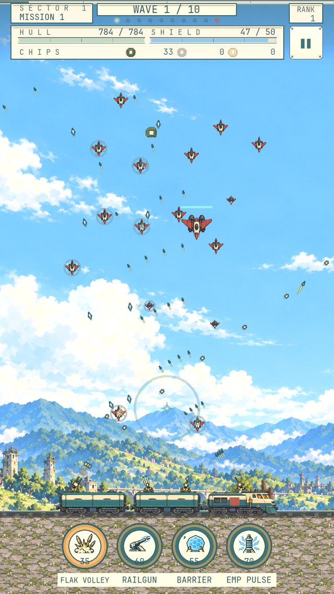

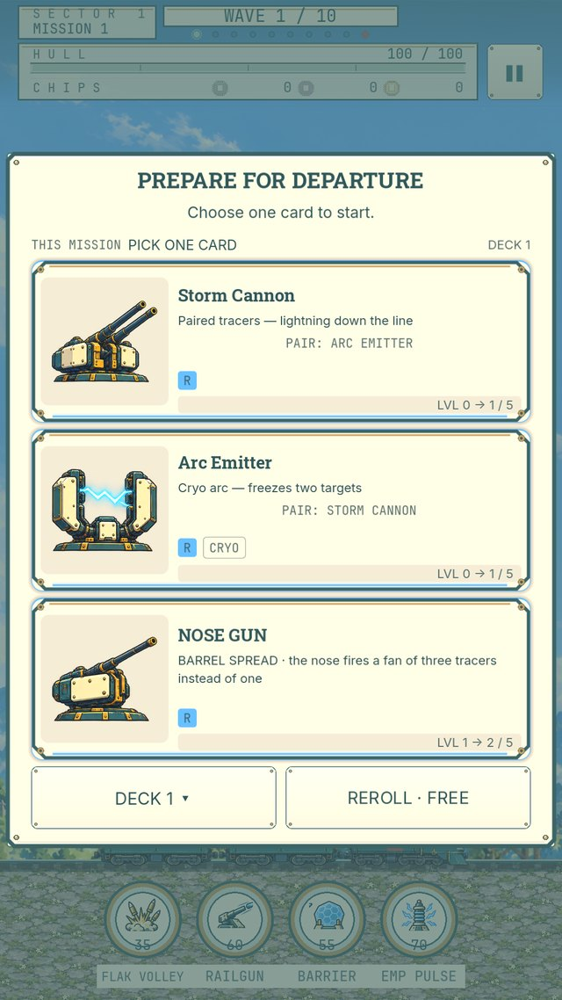

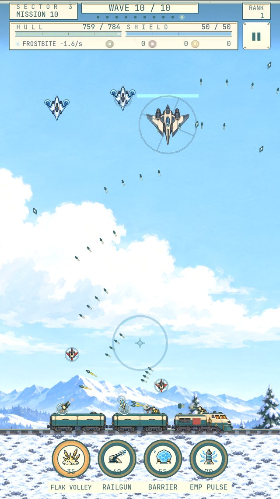

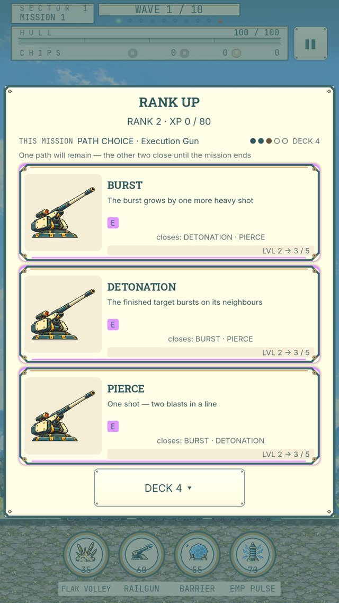

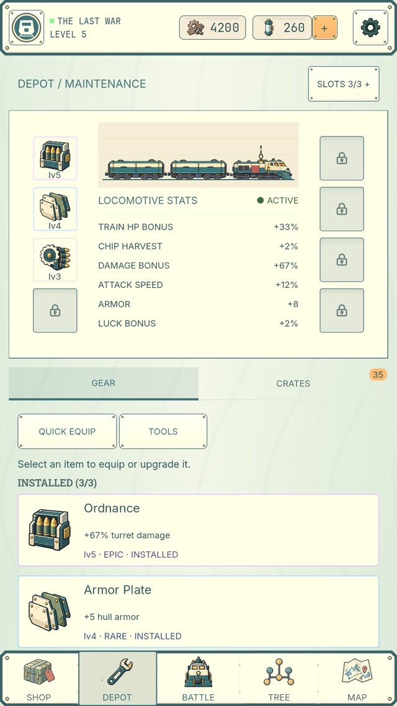

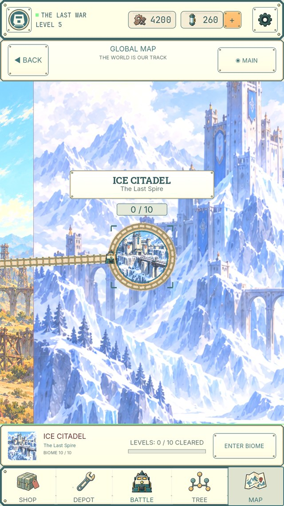

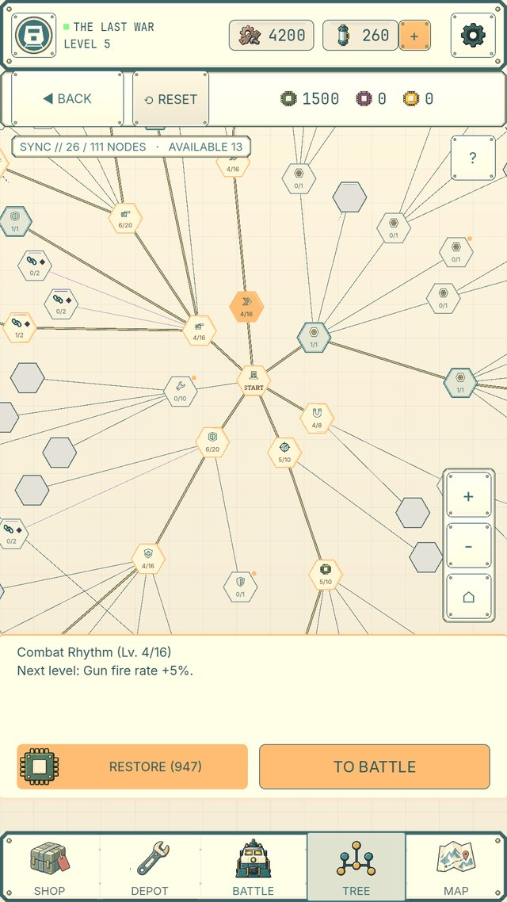
Как сделана игра
- Код. Боевой цикл, экономика, сохранения, магазин и интерфейс написали ИИ-агенты.
- Арт. Генеративные модели изображений. Нынешний стиль игры, «Зелёный рубеж», — поезд, враги, фоны биомов, интерфейс — сгенерирован по описанию стиля и референсам и собран в игровые атласы скриптами.
- Звук. Stable Audio Open — эффекты и музыка, сгенерированы локально. Часть коротких UI-тиков осталась процедурной: модель плохо держит транзиенты короче 0,3 с.
- Баланс. Кривые волн, экономика, лестницы орудий и дерево узлов настраивались по замерам проб — сцен, которые прогоняют бой и считают числа, — и проверкой на устройстве.
- Тексты. Сюжет, бортжурнал, строки интерфейса и локализация на 10 языков.
Что ИИ не делал. Игровой движок, шрифты и сторонние SDK (реклама, аналитика, платежи) — обычные внешние компоненты. Ролик — не сгенерированное видео, а записи из игры: AI-видео пробовали и отвергли, оно не совпадало со стилем. Человек ставит задачу, принимает работу и проверяет сборку на устройстве.
ШароКоты
В разработкеРоняешь кота в стакан. Два кота одного уровня коснулись — получился один, покрупнее; всего одиннадцать уровней, от Котёнка до Царь-Кота, и два Царь-Кота при встрече схлопываются насовсем.
Вокруг партии — дом: пять комнат и двадцать предметов. Купил лежанку — на неё въезжает выращенный кот и остаётся жить. Каждый день — три задачи и общее для всех испытание: арену и очередь котов задаёт дата.
Ролик, иконка, кадры
MP4
PNG · 1024 × 1024

Кадры 480 × 854 из сборки в разработке. Полный размер — по запросу.

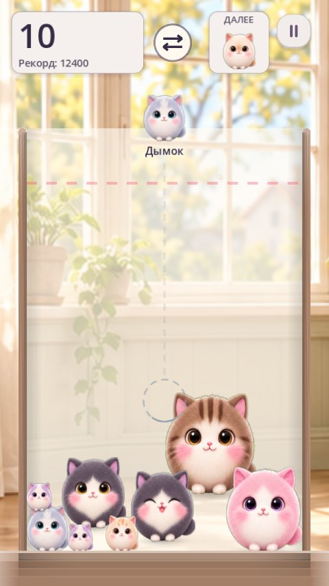

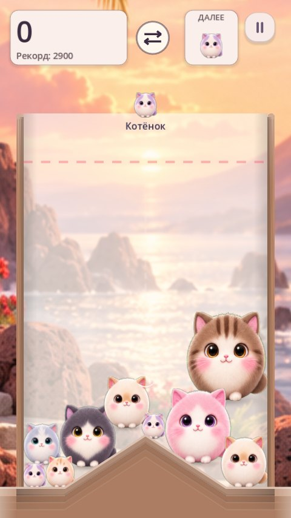

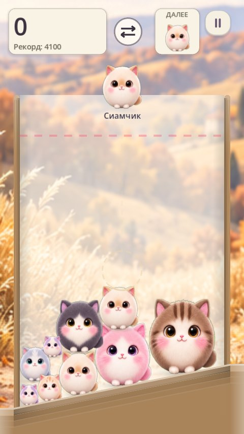

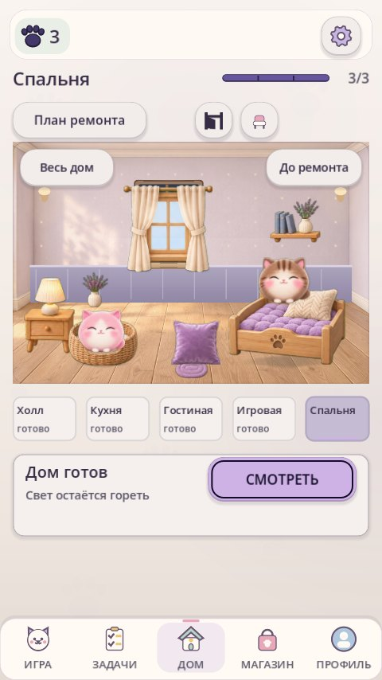

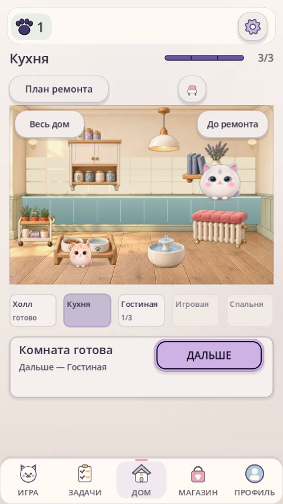

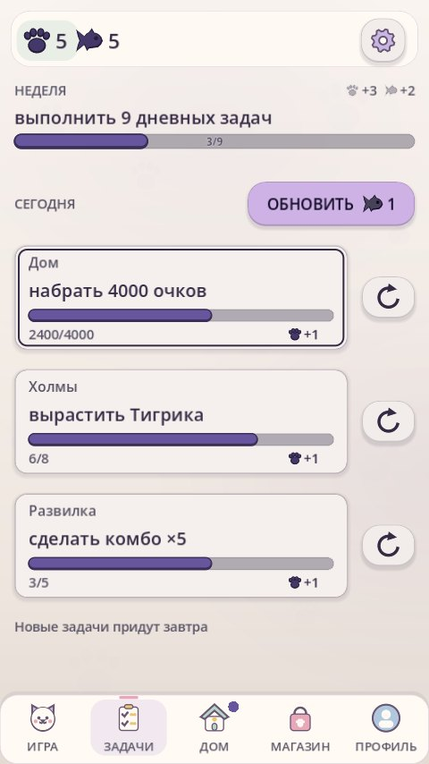

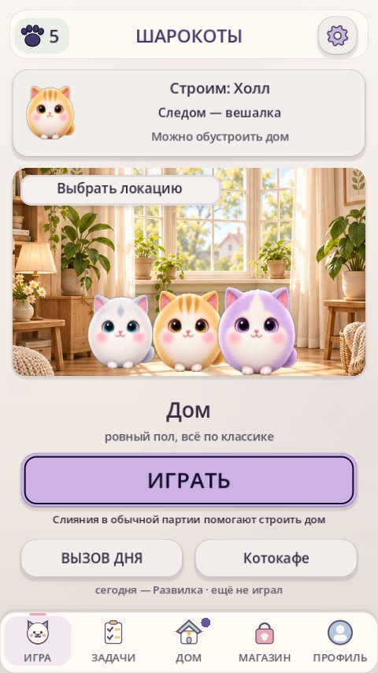
Aeryntha
В разработке · технодемоВолшебный остров засыпает. Игрок приручает фей, чьи силы открывают закрытые тропы: стихия разбивает валун, раздвигает колючки, плавит лёд. Из руин поднимаются мастерская и Старый мост, а от проснувшегося родника по засохшему лесу катится зелёная волна.
Играть можно одному или компанией до четырёх: мир, сюжет и стройка у команды общие, а феи, сумка и дружба с жителями у каждого свои. Сейчас в сборке первая глава целиком и вторая в работе.
Технодемо, ключевой арт, концепты
MP4 · 1152 × 648

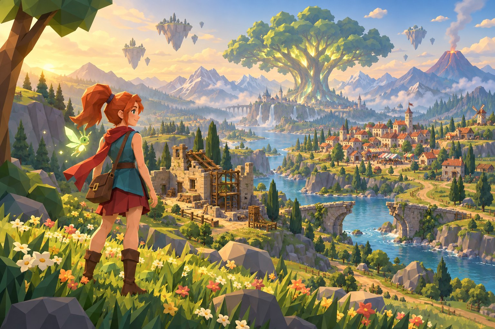
JPG · 1536 × 1024
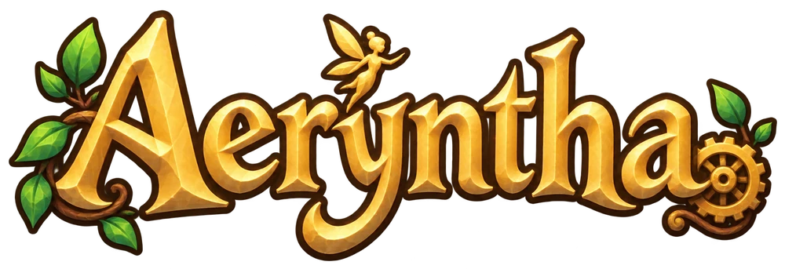
PNG · 1486 × 510

Концепт-арт из арт-библии игры, 1536 × 1024. Внешний вид сборки пока прототипный — кадры игры только в технодемо.

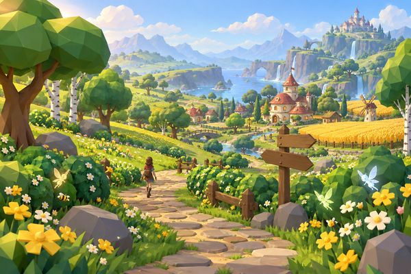

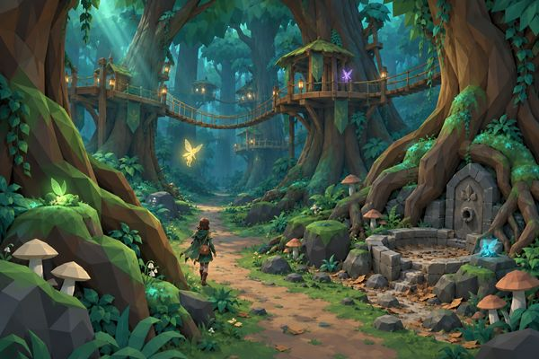

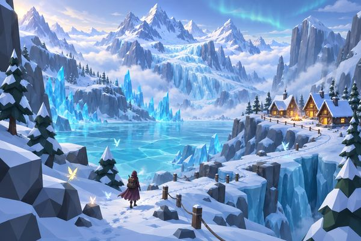

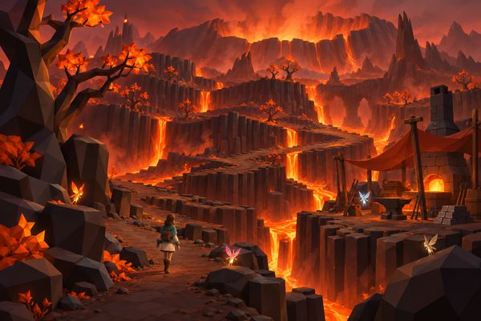

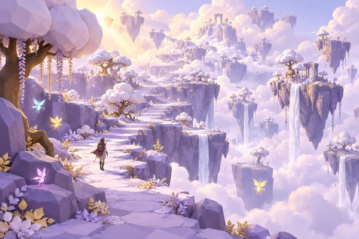

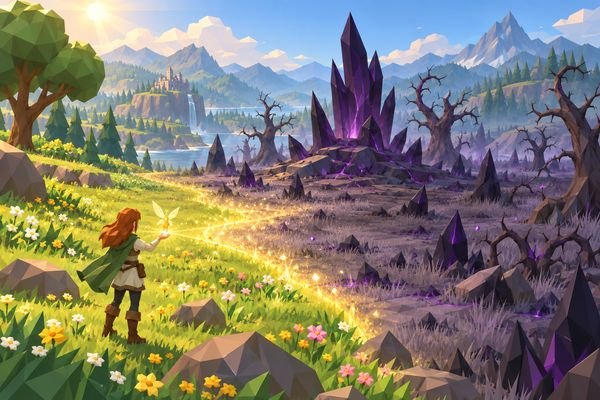

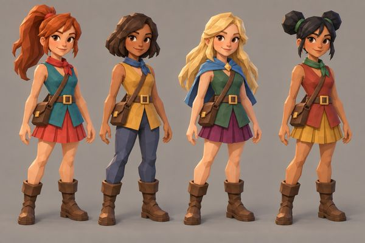